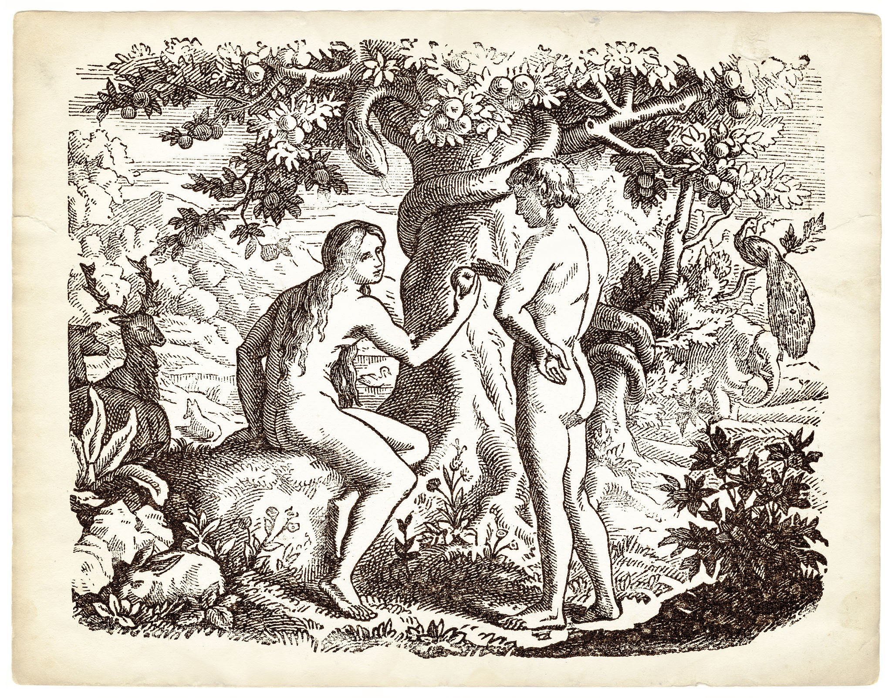
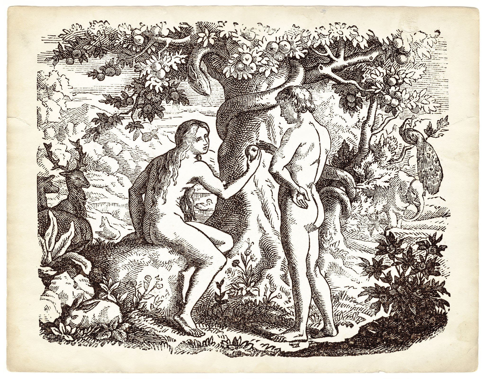

Adán y Eva: Un Viaje al Origen de la Humanidad en la Mitología judeocristiana
El relato de Adán y Eva en la tradición judeocristiana ofrece un fascinante tapiz de simbolismo y significado, explorando los misterios del origen humano y la relación con lo divino.
¿Que trata?
En el principio, Dios crea el universo y todo lo que hay en él en seis días. En el sexto día, decide crear al hombre y a la mujer a su imagen y semejanza. Forma al hombre del polvo de la tierra y lo llama Adán, y luego crea a la mujer de una costilla de Adán y la llama Eva. Dios coloca a Adán y Eva en el Jardín del Edén, un paraíso terrenal, y les da la responsabilidad de cuidarlo y gobernar sobre él. En el jardín, hay dos árboles específicos mencionados: el árbol de la vida y el árbol del conocimiento del bien y del mal.
Dios prohíbe a Adán y Eva comer del fruto del árbol del conocimiento del bien y del mal, advirtiéndoles que si lo hacen, morirán. Sin embargo, la serpiente, que representa la tentación y el engaño, persuade a Eva para que desobedezca a Dios y coma del fruto prohibido. Eva, a su vez, ofrece el fruto a Adán, quien también lo come. Como resultado de su desobediencia, sus ojos se abren y adquieren el conocimiento del bien y del mal, pero también se vuelven conscientes de su desnudez y sienten vergüenza. Cuando Dios descubre su desobediencia, los confronta y pronuncia castigos sobre ellos y la serpiente. A Adán y Eva se les expulsa del Edén, y Dios coloca querubines y una espada de fuego para proteger el acceso al árbol de la vida. Adán y Eva, ahora sujetos a la mortalidad y al trabajo duro, deben abandonar el Edén y enfrentar las dificultades del mundo exterior.

Significado y Simbolismo
El relato de Adán y Eva en la tradición judeocristiana ofrece un fascinante tapiz de simbolismo y significado, explorando los misterios del origen humano y la relación con lo divino.
¿Que trata?
En el principio, Dios crea el universo y todo lo que hay en él en seis días. En el sexto día, decide crear al hombre y a la mujer a su imagen y semejanza. Forma al hombre del polvo de la tierra y lo llama Adán, y luego crea a la mujer de una costilla de Adán y la llama Eva. Dios coloca a Adán y Eva en el Jardín del Edén, un paraíso terrenal, y les da la responsabilidad de cuidarlo y gobernar sobre él. En el jardín, hay dos árboles específicos mencionados: el árbol de la vida y el árbol del conocimiento del bien y del mal.
Dios prohíbe a Adán y Eva comer del fruto del árbol del conocimiento del bien y del mal, advirtiéndoles que si lo hacen, morirán. Sin embargo, la serpiente, que representa la tentación y el engaño, persuade a Eva para que desobedezca a Dios y coma del fruto prohibido. Eva, a su vez, ofrece el fruto a Adán, quien también lo come. Como resultado de su desobediencia, sus ojos se abren y adquieren el conocimiento del bien y del mal, pero también se vuelven conscientes de su desnudez y sienten vergüenza. Cuando Dios descubre su desobediencia, los confronta y pronuncia castigos sobre ellos y la serpiente. A Adán y Eva se les expulsa del Edén, y Dios coloca querubines y una espada de fuego para proteger el acceso al árbol de la vida. Adán y Eva, ahora sujetos a la mortalidad y al trabajo duro, deben abandonar el Edén y enfrentar las dificultades del mundo exterior.

Significado y Simbolismo
- La expulsión del Edén: La expulsión de Adán y Eva del Edén representa la pérdida de la inocencia y la entrada en un mundo marcado por el sufrimiento, el trabajo duro y la mortalidad. También simboliza la separación entre la humanidad y Dios como resultado del pecado.
- El árbol del conocimiento del bien y del mal: Este árbol representa la capacidad del ser humano para discernir entre el bien y el mal, pero también implica la tentación y la elección moral. La desobediencia de Adán y Eva al comer del fruto representa la entrada del pecado en el mundo y la ruptura de la relación con Dios.
- Imagen y semejanza de Dios: La idea de que el ser humano fue creado a imagen y semejanza de Dios sugiere que cada individuo tiene un valor intrínseco y una conexión especial con lo divino.